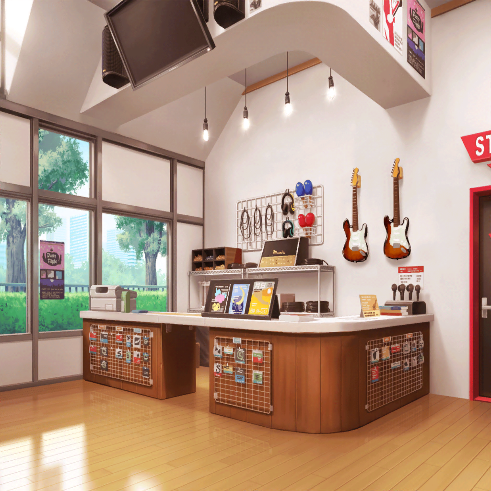

スタジオ
ひまり
えーーーっ！？ あこちゃんに話さなかったの！？
巴
最初は全部話すつもりだったんだよ、
あこが成長したこと、ちょっとさみしかったとか色々……
巴
けど、いざ言うぞー！ ってなった時に
ふと思ったんだよな
巴
この話、あこが知る必要あるのか？ って
つぐみ
どういうこと……？
巴
いや、だってあこはアタシのこと慕ってくれてるんだ。
アタシのそんなややこしい気持ちとか話したところで、
あこの顔は晴れないだろ
巴
あこには笑っててほしい。
笑顔でアタシのことをずっと慕っててほしい。
それだけで十分なんだよ
巴
つべこべ言わず、姉のアタシは背中で語る……みたいな？
ははっ、なんかそういうほうが向いてるんだよアタシはさ
モカ
トモちんのかっこつけがここまで突き抜けてるとはね〜
蘭
けど、あたしもそのほうが巴らしいと思う。
それが巴のいつも通りっていうか……
巴、やっとカッコよくなったんじゃない？
巴
あはは。そうだろ？
ひまり
巴が満足してるなら、それでいっか
とにかく、あこちゃんと仲直りできてよかったね♪
巴
ああ！ みんな、ゴメンな。
はっきりしないでいてさ
巴
蘭、あの時怒ってくれてありがと
蘭
別に……
ひまり
一件落着したところで、そろそろ片付けよっか！
まだ早い時間だし、このあとつぐの家でお茶したいな
つぐみ
うんっ。そうしよっか

CiRCLE ロビー
モカ
今日はケーキセットにしちゃおっかな〜。
つぐ、オススメはー？
つぐみ
えっと、今はね――
紗夜
あら……？
紗夜
羽沢さん、こんにちは
つぐみ
わあ！ 紗夜さんっ！
こんにちは。これから練習ですか？
紗夜
ええ。これからバンド練なのですが、
少し早く着いてしまいました。
……そうだわ。宇田川さん、少しいいかしら
巴
えっ！？ アタシですか？！
だ、大丈夫ですけど……みんな、先行っててくれ
ひまり
わ、わかった！
巴
あ、あの……アタシ、なにかしちゃいましたかね……？
紗夜
いえ、そういうわけでは……
あこさんから少し話を聞いていたものですから
巴
あ、あはは……そうだったんですか。
あこ、紗夜さんに相談してたんですね
紗夜
相談にのった、というほどのものではないですが……
その……
巴
あはは、ありがとうございます。
昨日、あことしっかり話しました。あこも、紗夜さんの
おかげか、思っていることぶつけてくれましたよ
紗夜
そうですか
巴
……アタシも色々、あこにぶつけようと思ったんですけど
やめたんです
紗夜
何故ですか？
巴
姉の意地、ですかね？
巴
妹にカッコ悪いとこ見せたくないっていうか。
……照れくさくて言えなかったっていうのもありますけど
紗夜
……あなたは本当に強いわね
巴
そ、そうですかね？ いやいや、この結論にたどり着くまでは
ずっとモヤモヤして、ダメだったんです。
そしたら、蘭にめちゃめちゃ怒られて
巴
それもあって、吹っ切れたって感じですかね？
紗夜
少しだけ考えたんです。もし、私の妹が、
私を追いかけなくなったらどう思うか……
紗夜
私なら少しだけ、ホッとしてしまうかもしれないと思ったんです
巴
紗夜さん……
紗夜
だからこそ、あなたのことは尊敬しています。
どうあっても、姉を全うしようとする姿が、とても
巴
あははっ。褒めすぎです！
アタシは姉としての紗夜さんって、知らない部分が多いですけど
巴
きっと、それぞれ自分らしい姉でいられたら
それでいいんだと思います
紗夜
……それもそうですね
紗夜
（すべてぶつけた私。隠すことでふっきれた巴さん。
どちらも『姉』なのよね……）
紗夜
すみません、急に呼び止めてしまって。
Afterglowのみなさんによろしくお伝えください
巴
はいっ！ ありがとうございます！
あこ
あれ？ おねーちゃんに、紗夜さんだ！
おーい！
巴
おっ、あこ！ これからRoseliaの練習なんだって？
あこ
うん、そうなんだ！
紗夜さんと今、何の話してたの？
巴
あー、いや。別に大した話じゃないよ
あこ
えー！？ 教えてくれないの！？ ずるい〜！
紗夜
別に、本当に大したことじゃないからよ。
巴さん、それじゃあ私達は練習へ行きます
巴
はい！ あこ、カッコイイドラマー目指して、
練習がんばれよ〜！
あこ
がんばるけど〜！ 何話してたのか教えてよ、二人とも〜！